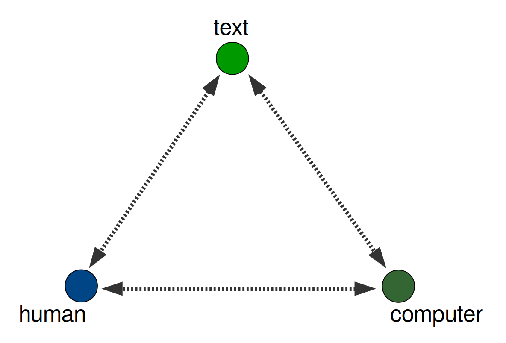
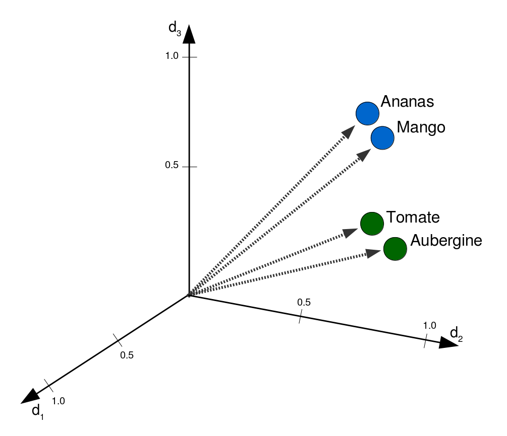
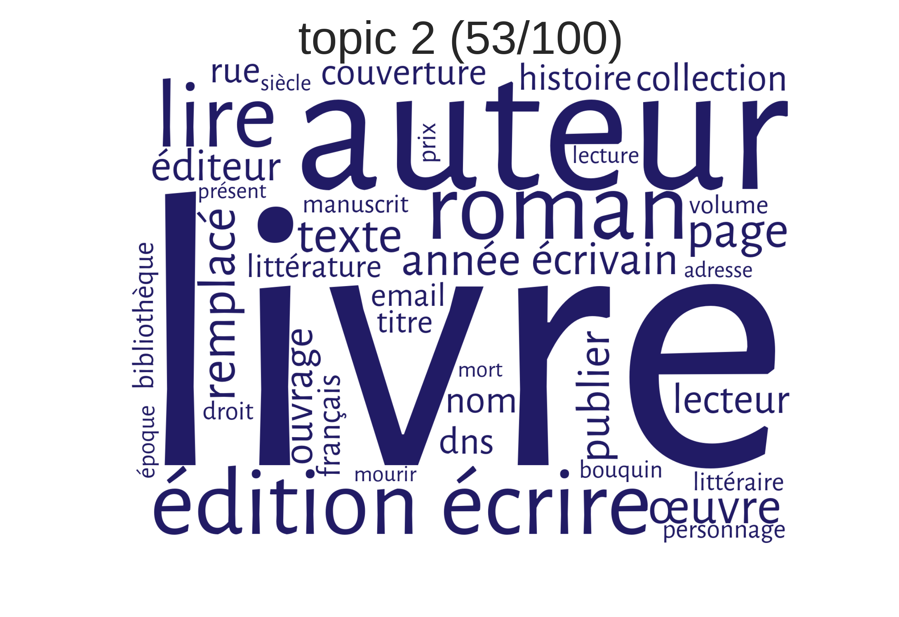
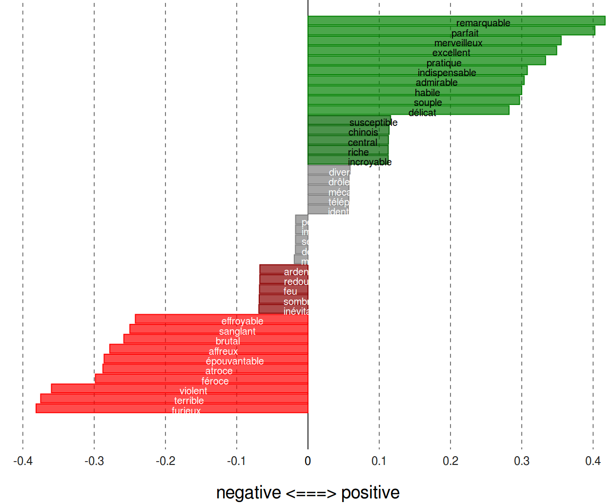
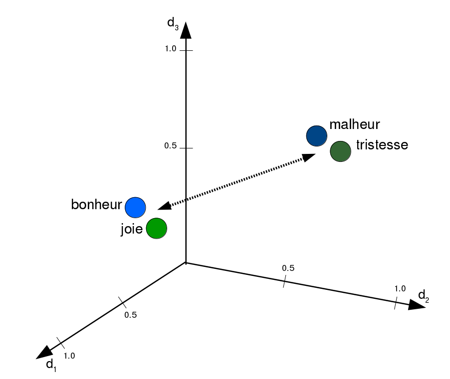
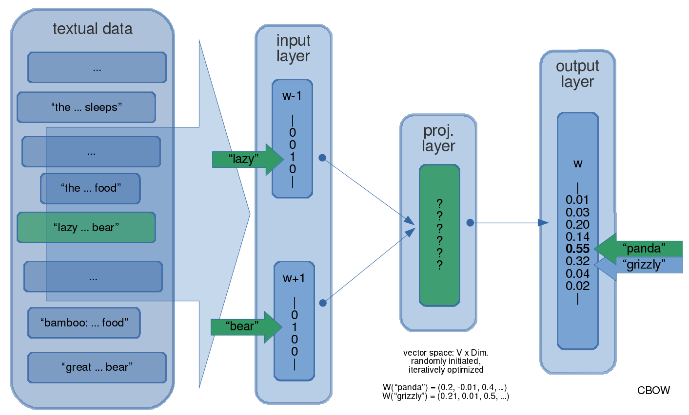

<!doctype html>
<html lang="en">
<head>
<meta charset="utf-8">
<!-- CUSTOMIZE THIS! -->
<title>GISFOH 2017</title>
<meta name="author" content="Christof Schöch">
<!-- END -->
<meta name="description" content="Slides">
<meta name="apple-mobile-web-app-capable" content="yes">
<meta name="apple-mobile-web-app-status-bar-style" content="black-translucent">
<meta name="viewport" content="width=device-width, initial-scale=1.0, maximum-scale=1.0, user-scalable=no, minimal-ui">
<link rel="stylesheet" href="css/reveal.css">
<link rel="stylesheet" href="css/theme/simple.css" id="theme">
<!-- Code syntax highlighting -->
<link rel="stylesheet" href="lib/css/zenburn.css">
<!-- Printing and PDF exports -->
<script>
var link = document.createElement( 'link' );
link.rel = 'stylesheet';
link.type = 'text/css';
link.href = window.location.search.match( /print-pdf/gi ) ? 'css/print/pdf.css' : 'css/print/paper.css';
document.getElementsByTagName( 'head' )[0].appendChild( link );
</script>
<!--[if lt IE 9]>
<script src="lib/js/html5shiv.js"></script>
<![endif]-->
</head>

<body>
<div class="reveal">
<div class="slides">
<section data-markdown="" data-separator="^\n---\n" data-separator-vertical="^\n--\n" data-charset="utf-8">
<script type="text/template">

<!-- THIS IS WHERE THE CONTENT GOES! -->
<!-- Any section element inside of this container is displayed as a slide -->

# Quantitative Approaches to Textual Semantics
<br/>
<hr/>
<br/>
Christof Schöch<br/>(Würzburg/Trier, Germany)
<br/>
<br/>
9th GISFOH Symposium<br/>(September 10-13, 2017, Israel)
<br/>
<br/>
<hr/>
</img>&nbsp;&nbsp;&nbsp;&nbsp;&nbsp;&nbsp;</img>&nbsp;&nbsp;&nbsp;&nbsp;&nbsp;&nbsp;</img>

---
# Overview
<br/>
1. [The Digital Literary Scholar's Dream](#/2)
2. [What Are Word Embeddings?](#/3)
3. [Querying a Word Embedding Model](#/4)
4. [Word Embeddings as Supporting Tools](#/5)
5. [Word Embeddings for Independent Methods](#/6)
6. [A Dream Come True?](#/7)


---
# The Digital Literary Scholar's Dream

--
## Computer, human, text



---
# What Are Word Embeddings?

--
## Fundamentals
<br/>
* "You shall know a word by the company it keeps" (Firth)<!-- .element: class="fragment" data-fragment-index="1" -->
* Representation: words as vectors in vector space <!-- .element: class="fragment" data-fragment-index="2" -->
* ex.: V("fox") = (0.23,0.21,-0.98,0.01, ..., 0.12) <!-- .element: class="fragment" data-fragment-index="3" -->
* Size of the model: eg. 50k words in 300 dimensions <!-- .element: class="fragment" data-fragment-index="4" -->

--
## Two Models
<br/>
* French Wikipedia: 1.8 million articles
* French 20th-century novel: 1200 novels


---
# Querying a <br/>Word Embedding Model

--
## Similarity



--
## Similar Words Query
<br/>
(Wikipedia)
```
Query:   ['poésie_nom', 10]
Result:  poétique_adj     0.841
         poème_nom        0.790
         prose_nom        0.733
         littérature_nom  0.715
         poète_nom        0.704
         poétique_nom     0.701
         poésie_nam       0.700
         anthologie_nom   0.695
         littéraire_adj   0.655
         sonnet_nom       0.651
```

--
## Similarity Query
<br/>
(Wikipedia)
```
Query: ['prose_nom', 'littérature_nom']
Result: 0.511518681366

Query: ['poésie_nom', 'littérature_nom']
Result: 0.714615326722
```

---
# Word Embeddings<br/>as Supporting Tools

--
## Topic Modeling
<a href="img/wordle_tp002.png"></a>

--
## Measure coherence of topics
<a href="img/roman20_topic-coherences.svg"></a>

<!--
--
## Extend and adapt sentiment lexica
<a href="img/figure-5_sentiments.png"></a>
-->

---
# Word Embeddings <br/>for independent methods

--
## Axes of meaning


--
## Axis query
<br/>
(French novels)
```
Axis: [["bonheur", "joie"],          # positive
       ["malheur", "tristesse"]]     # negative

Query:   ange
Result:  0.0875

Query:   monstre
Result   -0.1407
```

--
## Relation of words in semantic dimensions
<a href="img/roman20_words-2dim_nom_labels.svg"></a>


---
# A Dream Come True?

--
## Affordances
<br/>
* Access to text beyond surface phenomena <!-- .element: class="fragment" data-fragment-index="1" -->
* Supports interesting applications <!-- .element: class="fragment" data-fragment-index="2" -->
* Huge potential for diachronic semantics / history of ideas <!-- .element: class="fragment" data-fragment-index="3" -->

--
## Challenges
<br/>
* Requires a lot of text <!-- .element: class="fragment" data-fragment-index="1" -->
* Problem of evaluation <!-- .element: class="fragment" data-fragment-index="2" -->

--
## Dream? Not quite (yet)
<br/>
* From word to sentence meaning <!-- .element: class="fragment" data-fragment-index="1" -->
* From similarity to semantic content <!-- .element: class="fragment" data-fragment-index="2" -->
* From abstract meaning to meaning in context <!-- .element: class="fragment" data-fragment-index="3" -->
* Computer doesn't "understand" text <!-- .element: class="fragment" data-fragment-index="4" -->

--
## References
<small>

* Blei, David M. „Probabilistic Topic Models“. Communications of the ACM 55, Nr. 4 (2012): 77. doi:10.1145/2133806.2133826.
* Goldberg, Yoav, und Omer Levy. „word2vec Explained: deriving Mikolov et al.’s negative-sampling word-embedding method“. arXiv.org, 2014. http://arxiv.org/abs/1402.3722.
Heuser, Ryan. „Word Vectors in the Eighteenth Century“. In Digital Humanities 2017: Conference Abstracts, 256–60. Montréal: McGill University & Université de Montréal, 2017.
* Mikolov, Tomas, Kai Chen, Greg Corrado, und Jeffrey Dean. „Efficient Estimation of Word Representations in Vector Space“. arXiv.org, 2013. http://arxiv.org/abs/1301.3781.
* Pennington, Jeffrey, Richard Socher, und Christopher D. Manning. „Glove: Global vectors for word representation“, 2014. doi:10.1.1.671.1743.
* Turney, Peter T., und Patrick Pantel. „From Frequency to Meaning: Vector Space Models of Semantics“. Journal of Artificial Intelligence Research 37 (2010): 141–88. https://arxiv.org/abs/1003.1141.
* Widdows, Dominic. Geometry and meaning. CSLI lecture notes, no. 172. Stanford CA: CSLI Publications, 2004.

<p><br/>With special thanks to gensim, pygal and reveal.js</p>


</small>

--
<br/>
<br/>
## Thank you!
<br/>
<br/>
<br/>
<br/>
<hr/>
<p>Christof Schöch, 2017</p>
<p><a href="https://christofs.github.io/">christofs.github.io</a></p>
<p><a href="https://creativecommons.org/licenses/by/4.0/">CC-BY 4.0</a><br/></p>
<hr/>
<br/>
<br/>

---
# Bonus slides

--
## CBOW Model
<a href="img/cbow-model.png"></a>

--
## Projection
<a href="img/tsne-plot_topn-nom-5800_some-labels.svg"></a>

--
## Comparing models (novels vs. Wikipedia)
<a href="img/figure-6_sens17.png"></a>


</script>
</section>


<!-- DON'T TOUCH UNLESS YOU KNOW WHAT YOU'RE DOING :-) -->
</div>
<script src="lib/js/head.min.js"></script>
<script src="js/reveal.js"></script>
<script>
// Full list of configuration options available at:
// https://github.com/hakimel/reveal.js#configuration
Reveal.initialize({
    controls: true,
    progress: true,
    history: true,
    center: true,
    transition: 'slide', // none/fade/slide/convex/concave/zoom
    // Optional reveal.js plugins
    dependencies: [
        { src: 'lib/js/classList.js', condition: function() { return !document.body.classList; } },
        { src: 'plugin/markdown/marked.js', condition: function() { return !!document.querySelector( '[data-markdown]' ); } },
        { src: 'plugin/markdown/markdown.js', condition: function() { return !!document.querySelector( '[data-markdown]' ); } },
        { src: 'plugin/highlight/highlight.js', async: true, callback: function() { hljs.initHighlightingOnLoad(); } },
        { src: 'plugin/zoom-js/zoom.js', async: true },
        { src: 'plugin/notes/notes.js', async: true }
        ]
    });
</script>
</body>
</html>
